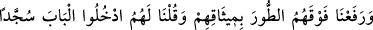
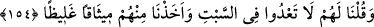

yasaklanmaktadır.
“Ve Mûsâ’ya apaçık delil” güç ve yetki “verdik” ve onu onlara hakim kıldık.
Nitekim Mûsâ (a.s) onlara işledikleri günahlardan tevbekar olmaları için kendilerini
öldürmelerini emretmişti. Onlar ise kılıçların gölgesi altında avlularında
gizleniyorlardı.
154- Söz vermeleri için Tûr’u üzerlerine kaldırdık da onlara, «Secde ederek
kapıdan girin» dedik, «Cumartesi günü haddi aşmayın» dedik. Kendilerinden
sağlam söz aldık.
Dîni kabûl etmek üzere “söz vermeleri için Tûr’u” yahûdîlerin “üzerlerine
kaldırdık.”
Rivayet edilir ki: Hz. Mûsâ yahûdîlere Allah katından Tevrat’ı getirdiği zaman onlar
bakıp ondaki emirlerin zor ve meşakkatli olduğunu gördüler. Bu onların gözlerine büyük
göründü ve kabul etmekten kaçındılar. O vakit Cenab-ı Hak Cibril (a.s.)’a Tûr Dağı’nı
yerinden söküp, emirlerini kabul edinceye kadar üzerlerine kaldırmasını emretti. Cibril
(a.s) da öyle yaptı.
“Onlara” Mûsâ (a.s)’ın diliyle Tûr dağı da üzerlerinde olduğu halde “Secde ederek
kapıdan”, “girin” dedik.
Rivayete göre girilecek yer Eriha’dır. Yahûdîler Mûsâ (a.s) zamanında Eriha’ya
girmişlerdi. Ya da girilecek yerden maksat kıble olarak yönelip namaz kıldıkları
Beytü’l-Makdis’dir. Çünkü onlar Mûsâ (a.s.)’ın hayâtında oraya girmemişlerdir.
Onlara, kendilerini çölden çıkardığından dolayı şükür nişanesi olarak oraya boyunlarını
eğerek tevâzu içinde girmeleri söylenmişti. Onlar da kendilerine söylenileni
değiştirerek oraya sürünerek girmişlerdi.
Yine biz onlara Dâvud lisânıyle, balık avlamak sûretiyle haksızlık edip “Cumartesi
günü haddi aşmayın” dedik.” Cumartesi yahûdîlerin ibâdet günüydü. Onlardan bâzıları
o güne mahsus yasakları çiğnediler, Cumartesi günü avlanma yasağını deldiler.
“Kendilerinden” bu mükellefiyetlere uyacaklarına dair “sağlam söz aldık.” Bu sağlam
sözden maksat Tevrat’ta kendilerine bildirilen bütün emirlere uyacaklarına ve bütün
yasaklardan sakınacaklarına dair “İşittik ve itâat ettik, yâ Rab!” diye söz vermeleridir.
Dinden dönmeye niyet ettikleri takdirde Allah’ın kendilerine dilediği şekilde azab
edeceğine dair söz verdikleri de söylenmiştir.